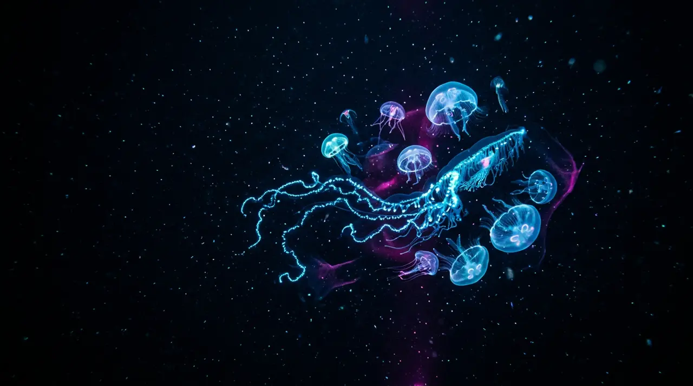

The Midnight Zone
Living Light in the Deep Sea

Below about a thousand metres, sunlight simply runs out, and yet the deep ocean is anything but dark. Roughly three-quarters of the animals living there make their own light through bioluminescence, a chemical reaction in which a molecule called luciferin is oxidised by an enzyme and releases its energy almost entirely as a cold blue glow. That particular colour is no accident: blue-green wavelengths travel farthest through seawater, so a signal flashed in the open water can be read from a surprising distance. Animals use it for very different ends. Anglerfish dangle a lure of glowing bacteria to draw prey within reach, lanternfish wear rows of belly lights that erase their silhouette against the faint glow from above, and a startled shrimp can vomit a cloud of luminous fluid to blind whatever is chasing it. The result is an enormous, quiet conversation in light, carried out in the largest habitat on Earth, and one we have only begun to eavesdrop on.